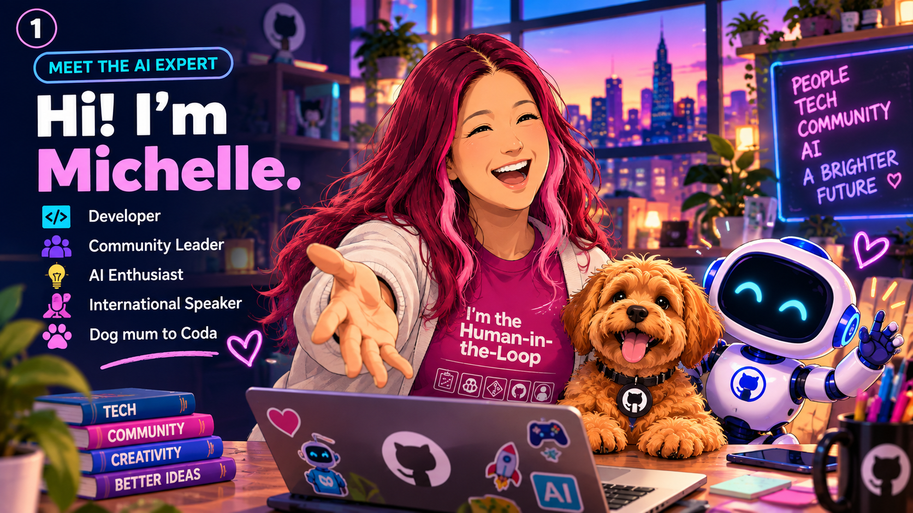

Chapter 01 / 17
Meet Michelle, the AI expert
Hi, I'm Michelle! AI experts are people who ask how technology can help others, and how to use it responsibly.
A human behind the technology
AI does not invent its own goals. People like Michelle work with teams to choose useful problems, study data, and check whether a system actually helps.
Questions worth asking
Who will use this tool? What could go wrong? Listening to the people affected is just as important as learning to code.
Maya meets an AI expert
Maya visited a school fair where Michelle showed a tool that sorted leaf photos. Maya asked if the computer knew what a tree was. Michelle smiled: it had learned patterns from labelled pictures, but it could still mix up two similar leaves.
Maya suggested testing it with leaves from the school garden. The team tried, checked every guess, and fixed confusing labels. Maya learned that AI experts do more than build tools. They ask useful questions, listen to people, and check whether the tool really helps.
A real-life example
A school team planning a reading helper might ask students and teachers what is difficult before choosing any technology. Their answers help the team solve a real problem.
Ask like an expert
- Pick a small problem at school or home.
- Ask two people what makes it tricky for them.
- Think of one helpful tool, with or without AI.
- Name one way you would check that it works well.